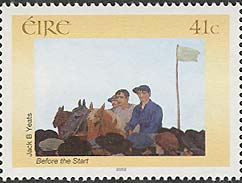
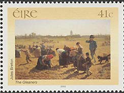
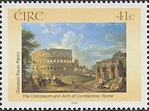
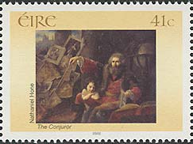
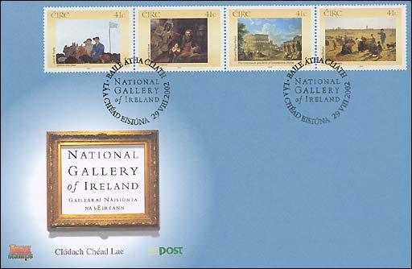

PAINTINGS FROM THE
NATIONAL GALLERY OF IRELAND
The Irish Post has issued the 29th August 2002 a stamps set based on paintings from the National Gallery of Ireland. The series will continue over the next three years, starting this year in celebration of the 14Oth Anniversary of the National Gallery. These four stamps will commemorate the Gallery's cultural and social significance in Ireland. The National Gallery of Ireland houses collections which span form the 14th to the 20th Century and includes all the major Continental Schools.

Jack B Yeats - "Before the Start". The West of Ireland provided Yeats with his inspiration. He drew on this rural landscape and its people, depicting many types and experiences. This painting is a fine example of his powerful expressionist genre. Jockeys assemble to begin a race, watched by an eager crowd. Yeats portrays his work with solitary figures that are alone hut yet together. The excitement and anticipation of the face does not unite the jockeys or the crowd.

Jules Breton - "Tne Gleaners". Breton never lost his lies to the peasantry and land of his childhood, drawing inspiration trom rural customs and traditions throughout his long career. Breton's work celebrates human values of work, family, home and hearth. His was a personal vision of rural life which combined realism and idealism. This particular painting was inspired by seasonal field laborers and the plight of the less fortunate who were left to gather what remained in the field after the harvest. Awarded a medal for this painting, which won Breton an acclaim among the public and contemporary artists, launched his long artistic career.

Giovanni Paolo Panini - The Colosseum" and Arch of Constantine, - best known for his view paintings, Panini extended his versatility to portraits, frescoes and state designs. His boldness, sureness in placement of architecture and elegant figures, give clear color and precise draftsmanship which inspired many imitators. Here in this painting, Panini captured the 18th Century fascination with the culture of antiquity. Colosseum and the Arch of Constantine Rome, symbolizes the passing paganism. These ancient sites evoke nostalgic sorrow for the lost golden age. Executed in a soft and varied range of grayish brown tones, the picture is enlivened by the multicolored clothes of the tourists. This painting is compelling for its combination and its cumulative effect.

Nataniel Hone, the EIder - "The Conjuror". Hone was a renowned miniaturists and portrait painter, noted for his paintings of middle class subjects. The Conjuror was a satirical work and created a scandal when first presented to the Royal Academy in 1775. This painting depicts a bearded conjuror, with a young girl on his knee, pointing a wand towards a fire kindled by an assortment of old masters prints. The National Gallery of Ireland acquired this painting in 1967.

The stamps were issued as a 4 se-tenant strip, in a sheetlet of 16. They were printed in lithography by the Irish Security Stamp Printing Ltd. The stamps above are shown bigger as the originals, and the size of the FDC was reduced for faster loading.
The text is after the Collectors News, Issue 3/02. www.irishstamps.ie. A nice set of classical art, so rarely seen in today's philately!
Link: National Gallery of Ireland, Part 2